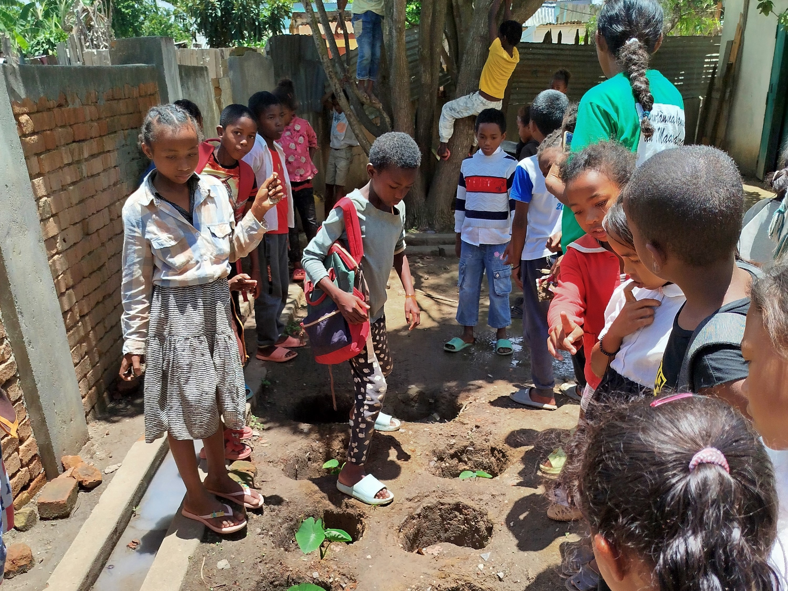
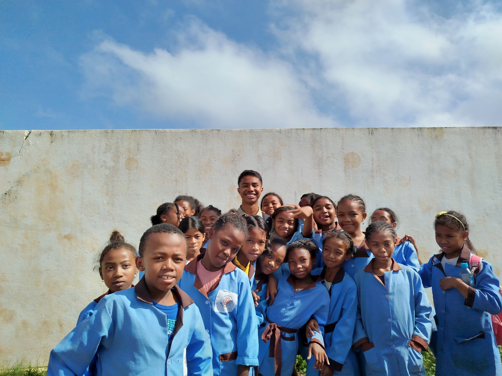
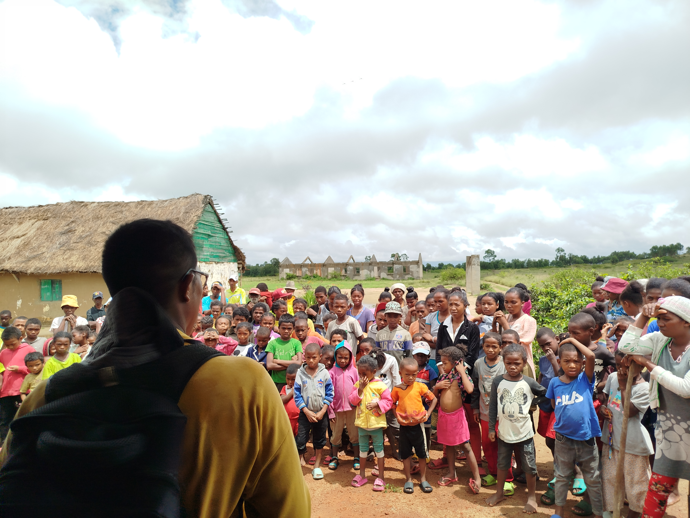
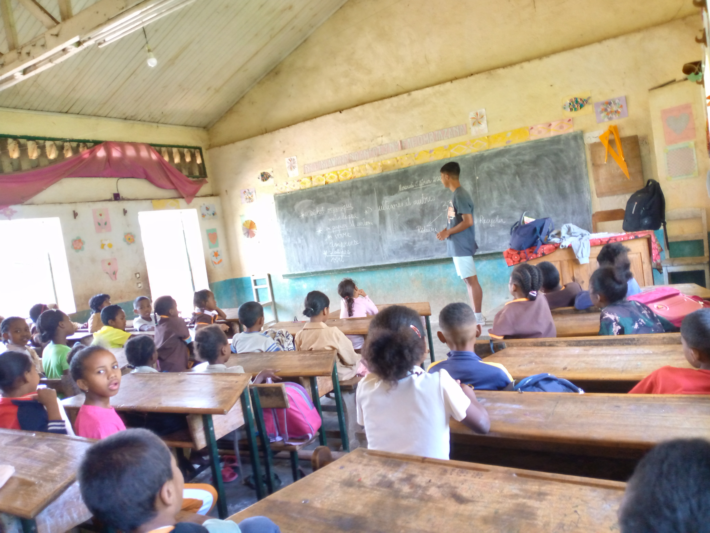

Un programme d'éducation environnementale qui touche les élèves de 8 à 14 ans. À travers 17 thématiques (tri, 3R, dégradation des déchets, énergies renouvelables...), nous aidons les enfants à comprendre l’importance de leurs gestes et à devenir eux-mêmes des agents de changement dans leur famille et leur quartier.

Des jardins éducatifs créés dans les écoles, pour apprendre à cultiver, composter, et améliorer l’alimentation scolaire. Ce jardin devient à la fois un outil d’éducation à l’environnement, un levier pour améliorer la cantine scolaire, et un espace de coopération entre enseignants, élèves et parents.

Reboisement participatif avec les élèves, les autorités, les ONG et les parents d’élèves. Plus de 1.000 jeunes plants plantés cette année, dont des fruitiers et ornementaux. Les enfants plantent eux-mêmes des arbres fruitiers ou indigènes et apprennent à les entretenir, ce qui renforce leur lien à la nature et leur sens de la responsabilité environnementale.

En collaboration avec l'ONG Welthungerhilfe, GPN a mené des sensibilisations à l'hygiène corporelle, à l'hygiène du lavage des mains, à la gestion des déchets et à l'eau potable dans plusieurs établissements scolaires.